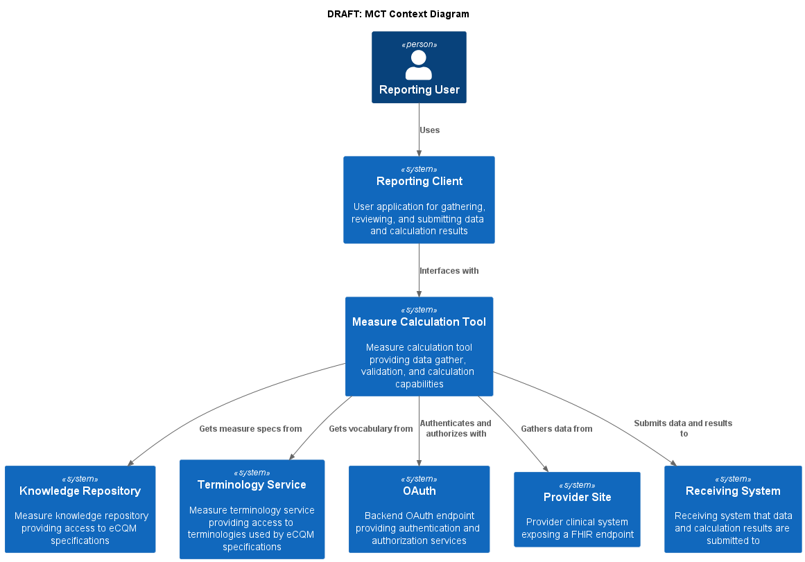

CMS FHIR Prototype Measure Calculation Tool IG
0.1.0 - CI Build

CMS FHIR Prototype Measure Calculation Tool IG
0.1.0 - CI Build

CMS FHIR Prototype Measure Calculation Tool IG - Local Development build (v0.1.0). See the Directory of published versions
This Technical Requirements Document (TRD) documents both the high-level system design and the low-level detailed design specifications. In addition, this TRD describes design goals and considerations, specifications, and an overview of the system architecture. It also describes the information architecture and data structures associated with the system, in addition to human-machine interface and operational scenarios. The high-level system design is further decomposed into low-level detailed design specifications for each system component. Design documents are incrementally and iteratively produced during the system development life cycle, based on the circumstances of the information technology (IT) project and the system development methodology used for developing the system. This document is intended for technical stakeholders involved in the implementation of this system including developers, project managers, users, testers, and documentation writers. Some portions of this document, such as the user interface (UI), may be useful to share with the client/user and other stakeholders whose input/approval into the UI is needed.
This section covers background for the Measure Calculation Tool (MCT), provides a brief overview of the technical solution, and identifies risks, constraints, and design guidelines for the solution.
Situation
The Promoting Interoperability Program incentivizes eligible hospitals and providers to demonstrate meaningful use of certified health information technology (HIT) to improve quality, safety, efficiency, and equity of the American health care system. Hospitals participating in the inpatient hospital quality reporting program (IHQR) are encouraged to voluntarily submit four, electronic clinical quality measures (eCQM) for three of four quarters.
Problem
However, the process of electronically sharing population-level data is labor-intensive and cumbersome, hampered by a lack of standardization of data models and fields. In order to calculate eCQMs today, providers must map their EHR propriety data models to the Quality Data Model (QDM) and upload their results as a Quality Reporting Document Architecture Category I formatted file onto the Hospital Quality Reporting portal, as well as participate in post submission audits.
In order to reduce the burden of data collection and improve interoperability, CMS aims to transition away from traditional electronic clinical quality measurement to Fast Healthcare Interoperability Resources (FHIR)– specified measures, that leverage certified health information technology or digital quality measurement (dQMs)
As per the 21st Century Cures Act Final Rule, developers of certified health information technology (HIT) must ensure their technology supports a variety of use cases, including the calculation of quality measure. Technology certified by the Office of National Coordinator ONC must support “standardized API for patient and population services.” Certified HIT will
DQMs will allow eligible providers and hospitals to seamlessly exchange patient and population level data for the calculation and reporting of quality measure scores, using a Measure Calculation Tool (MCT).
An MCT is an open-source, end-to-end software system, designed to interface with eligible hospital and clinicians FHIR application programming interface (API), gather data requirements for measure calculation from a knowledge repository, request and validate data from a provider API, calculate measure score(s) using Clinical Quality Language, and produce electronic report(s). Centers for Medicare and Medicaid Services (CMS) has contracted Yale Center for Outcomes Research & Evaluation (CORE) to orchestrate the development of an early MCT prototype and demonstrate its ability to calculate a measure score for single FHIR-specified measure.
Objective
To develop a prototype of the MCT engine that will be able to demonstrate key features of the enterprise level MCT platform. These features will be defined and enumerated as user stories. All features not selected for development and testing for prototype will remain in the backlog.
Stakeholders
The following comprises the internal and external stakeholders whose requirements are represented by this document:
As depicted in the above diagram, the Measure Calculation Tool is a software system that facilitates gathering quality reporting data, performing data validation, measure calculation, and submission. This process makes use of FHIR standard APIs implemented by vendor systems at provider sites, reducing the overall burden of quality reporting by eliminating the need to transform proprietary data models to the QDM model. By using FHIR as a standard data model for the expression of quality measures, quality reporting data exchange, measure calculation, and reporting submission can be implemented in a single standard way, rather than requiring each vendor system to interpret and apply measure specifications.
This document describes the architecture and technical requirements for the Measure Calculation Tool, as well as documenting the implementation of the current Measure Calculation Tool prototype using open source and freely available non-commercial reference implementation software. This process will demonstrate the technical feasibility of the approach while highlighting risks for and next steps to facilitating fully scalable production-level implementation.
This section documents the assumptions, constraints, and risks associated with the Measure Calculation Tool.
The following architectural and system constraints are identified for the MCT:
Any software project carries risks associated with development such as defects, performance issues, version management, and dependency tracking. To mitigate these standard risks, the project uses industry-standard development methodologies, tools, and technologies including agile development, GitHub source control and change management, Java, Maven, ReactJS, Yarn, and continuous integration.
In addition, the Measure Calculation Tool project overall carries risks associated with standards support and adoption, performance concerns associated with population-level data access, as well as policy and governance concerns associated with accessing patient data:
Insufficient data available through FHIR APIs
Although industry adoption of FHIR in the United States (US) is widespread, the adoption is based on the foundational information established by US Core Data for Interoperability (USCDI) and specified as FHIR profiles in the US Core Implementation Guide (IG). Effective quality measurement often requires additional information not yet characterized in US Core, but available with the FHIR Quality Improvement profiles, Quality Improvement (QI) Core. The QI Core profiles are derived from and consistent with US Core. However, there are specific data elements defined in QI Core that are not explicitly profiled in US Core, meaning that systems implementing US Core, would not likely support these additional data elements. Although gap analysis of US Core and QI Core has been done and continues to inform recommendations from QI Core to USCDI and USCDI+, we provide a specific gap analysis of the profiles used for the CMS104 prototype quality measure as part of this risk assessment:
CMS 104 uses the following profiles or data elements:
QICoreEncounter vs USCoreEncounter
The QICoreEncounter profile introduces support for several aspects of encounter representation that are not specified in US Core. In particular:
ServiceRequest vs USCoreServiceRequest
NOTE: The ServiceRequest profile was not available in US Core 3.1.1, so this analysis is performed on the latest published version, 5.0.1.
ServiceNotRequested vs USCoreServiceRequest
NOTE: The ServiceRequest profile was not available in US Core 3.1.1, so this analysis is performed on the latest published version, 5.0.1.
ProcedureNotDone vs USCoreProcedure
MedicationRequest vs USCoreMedicationRequest
MedicationNotRequested vs USCoreMedicationRequest
Inconsistent implementation of data available through FHIR APIs
Although US Core profiles provide conformance requirements for data made available through FHIR APIs, there is still implementer flexibility that can lead to issues with achieving, unambigous accurate data exchange between systems. Specifically related to CMS104:
class and type of an encounter, they are both specified as recommendations, rather than conformance requirements. The result is that not all implementations will make these search parameters available, making selection of appropriate encounters difficult.class is required and provides an appropriate value set of codes (ActEncounterCode), the binding is extensible, meaning that implementations may choose alternative codes if there is no suitable code in the value set. The practical implication of this is that implementers may opt for local codes, rather than going through the effort of mapping those local codes to suitable codes in the value set. The impact is that the class element may not be reliable as a filtering mechanism for encounters such as ‘Inpatient Encounters’Insufficient data selectivity available through FHIR APIs
Another consequence of missing search parameters is that more data than is strictly necessary may need to be retrieved because the filtering criteria may not match available search parameters. For example, if a system implements the Encounter.class search parameter, but not the Encounter.type search parameter, measure calculation would need to retrieve all encounters for a class and subsequently filter on type.
Lack of terminology support for data access through FHIR APIs if a measure requires an initial population that includes encounters with a type specified in the ‘Inpatient Encounter Codes’ value set, retrieving the necessary data may require expanding the value set and requesting encounters for any code in a list, such as “retrieve all encounters with a type code in the list (‘123’, ‘234’, ‘345’, ‘456’)”. There are numerous challenges associated with this, including the need to segment large value sets into multiple queries.
Insufficient performance of data available through FHIR APIs
In some cases, performance of retrieval through FHIR APIs may be an issue. For example, a specific case likely to impact CMS104 calculation is the retrieval of past medication orders. In some FHIR APIs, this query can take a significant amount of time (i.e., on the order of 30 seconds to several minutes), resulting in reduced measure calculation performance overall.
Insufficient performance of validation of FHIR data
For the prototype, the MCT makes use of the open-source Java reference implementation validator used by FHIR publishing tooling as well as several other open source reference implementations. For complex validations, especially involving terminology, this component can take a significant amount of time. In particular, we see cases that take multiple seconds to validate the data for a single patient. The majority of this time appears to be due to direct terminology server usage by the validation component.
This risk could be mitigated by adding caching to the terminology capability of the validation component.
The Measure Calculation Tool is a standards-based implementation and uses industry standard software technologies and development approaches to ensure it can be used effectively by healthcare IT staff at hospitals and clinics throughout the United States. This includes:
The following design guidelines inform the Measure Calculation Tool and prototype design and implementation:
The MCT must conform to the safety and privacy requirements of any site in which it is implemented. The system requires site-based implementation for operation and is designed in such a way that implementation will be executed fully within a site firewall. For any safety or privacy concerns related to clinical quality measure logic, please refer to the details of the specific measures being evaluated.
Scrum is an Agile methodology that allows the project team to focus on delivering the highest business value in the shortest time. It allows the team to rapidly and repeatedly inspect actual working software (every 2 weeks). The business sets the priorities, and teams self-organize to determine the best way to deliver the highest priority features. Every 2 weeks any stakeholder can see real working software and decide to release it as is or continue to enhance it for another sprint. This rapid and iterative approach has been quickly gaining acceptance within the informatics community (Kannan et al., 2019).
This project also used a “Continuous Delivery” pipeline to support project development, as has been commonly employed by industry leaders like Amazon, Netflix, eBay, Comcast, and Uber for over 10 years. This approach consistently reduces:
The Reporting Client should provide a simple interface for quality improvement staff at provider organizations to gather the required data for a measure from any or all of the facilities for the organization, display any relevant validation or missing information messages along with the calculated measure score, and submit the data and score to a receiving system.
The User Interface (UI) for this prototype will be a minimalist React-JS application that mimics the experience of submitting reporting data in the current hospital reporting system.
The specific capabilities of the UI are documented as part of the user stories in the technical requirements section of this document, but broadly the functionality must include:
This project uses the C4 modeling (Brown, n.d.) as an approach to define and document the system architecture: Context, Container, Component, Code (C4). More information on C4 modeling and its use is publicly available (https://c4model.com/)
This project will also use industry standard, open source, and widely available development tools and technologies, including:
As described in the design Constraints section (above), this project’s approach is to choose standards-based approaches, whenever possible, between the Measure Calculation Tool and the clinical systems with which it interacts. However, when building functionality for the project, there are two considerations that the project must address:
The standards involved in the specification, distribution, and implementation of FHIR-based quality measures include:
Performance requirements, such as the defined scalability or responsiveness expectations for specific workloads, are a contributing factor to system design. Preliminary considerations of system performance include total time to gather data for a single patient and for a facility, the total time to calculate a measure for a single patient and for a population, and the total time to submit the data and the calculated scores to a receiving system. During the development process, the team continuously worked to surface specific response time goals.
This section documents the logical view of the system architecture, and the high-level organization and technological approach to the software, application, and information architecture of the MCT.
The following diagram provides the context of the proposed MCT in the environment in which it is intended to function. The reporting user is shown interacting with the system through the Reporting Client, which interacts with the MCT to gather data, perform validation and measure calculation, and submit the resulting data and scores to the receiving system.

As shown in the diagram, the Reporting Client allows a Reporting User to interface with the MCT to select reporting facilities, the measure to be calculated, and the measurement period to be reported. The UI displays the results of the validation step, including whether the data meets the data requirements for the measure to be reported, as well as any validation information returned by the MCT and the calculated measure score. The Reporting User is given the opportunity to review validation results to determine whether additional corrective action needs to be taken by the provider sites, or if the data meet expectations and the measure calculation score is accepted, the Reporting User is able to transmit the results to the Receiving System.
To complete the required gather, validation, and calculation, the Measure Calculation Tool interfaces with the Knowledge Repository, Terminology Service, Provider Site(s), and Receiving System.
The Measure Calculation Tool makes use of the Knowledge Repository to retrieve measure specifications as well as data requirements for the specific measure or measures being calculated. This interface is described by the Measure Repository Service defined in the Quality Measure Implementation Guide.
The Terminology Service is used to provide appropriate expansions of value sets referenced by the measure specification. This interface is described by the Measure Terminology Service defined in the Quality Measure Implementation Guide.
The Measure Calculation Tool accesses the Provider Site (or sites) via the FHIR Server exposed by each provider site. Consistent with current adoption, the provider site FHIR server is expected to conform to at least the 3.1.1 version of the US Core FHIR implementation guide. Ideally, provider sites would also conform to newer versions of US Core, as well as to the QI Core implementation guide.
And finally, the Measure Calculation Tool interfaces with the Receiving System as described by the Receiving System capability statement defined in the Data Exchange for Quality Measures implementation Guide.
Note that for the purposes of this prototype, the capabilities provided by the Knowledge Repository and Terminology Service are modeled and implemented as interfaces within the Measure Calculation Tool, as the ecosystem for publishing quality measures via an API is not yet established and outside the scope of this prototype.
The following diagram illustrates the container level of the measure calculation tool, depicting the interactions it has with external systems:
As shown in the diagram, the Measure Calculation Container provides the implementation of the MCT, as well as support for the configuration of information required to perform the calculation, including information about the reporting provider, available measures for calculation, as well as facility and receiving system endpoints.
The Reporting Client makes use of these services to allow users to perform end-to-end measure calculation and reporting, and to facilitate data and calculated score validation.
Externally, the Measure Calculation Tool container must interface with the Knowledge Repository, Terminology Service, Provider Site(s), and Receiving System. Again, for the purposes of this prototype, the functionality provided by the Knowledge Repository and Terminology Service is modeled and implemented as interfaces within the Measure Calculation Tool.
The following diagram illustrates the coordinator component of the measure calculation tool:
As shown in the diagram, the Reporting Client interfaces with the coordinator component to provide measure calculation and reporting services to the end user.
The Coordinator component is responsible for accepting calculation and submission requests, managing the data flow required to support the requested calculation, and returning responses from the calculation process. The coordinator makes use of the Knowledge Repository Interface to request measure specifications and data requirements processing, the Terminology Service Interface to request value set expansion, the Provider Interface to request data from each facility being reported, and the Receiver Interface to submit calculation results on a successful and approved measure calculation result.
The Evaluator component supports evaluation of quality measures using the FHIR Measure resource to describe the measure structure, as well as the FHIR Library resource to contain libraries of Clinical Quality Language definitions used by the measure.
The Translator component supports translator of libraries of Clinical Quality Language definitions into the machine-processable Expression Logical Model (ELM) format used for data requirements analysis as well as actual evaluation of the expressions.
The Engine component supports evaluation of Expression Logical Model (ELM) content to calculate the results of each expression used by the quality measure.
The Knowledge Repository Interface and Terminology Service Interface components provide a level of indirection between the Coordinator and the external Knowledge Repository and Terminology Service systems to facilitate implementation within the Measure Calculation Tool in the absence of an ecosystem of available Measure Repository and Terminology services. This approach allows the coordinator to be built in a way that supports use of these services once they are available, while also enabling prototype implementation by making use of existing source code components that can perform the required capabilities such as data requirements analysis and value set retrieval.
The Provider Interface component provides a simple adapter for the FHIR server endpoints of the provider site(s) to support any potential additional processing required by the measure calculation tool.
The Receiver Interface component provides an implementation of the capabilities defined by the Receiving System capability statement to support data and calculated score submission to the Receiving System.
The following diagram illustrates the configurator component of the measure calculation tool:
As shown in the diagram, the Configurator component is used by the Reporting Client to support user selection of the measure to be calculated, the organization and facilities to be reported, and required reporting provider information.
In a production implementation, this component would be responsible for persisting and maintaining this configuration information. For the purposes of this prototype, the configurator component simply provides the required information via configuration files, including:
The Measure Calculation Tool is implemented as a Sprint Boot Java application hosting a HAPI FHIR service with custom implementations of the operations required to support gathering quality measure data, validating data, calculating the measure, and submitting the resulting report and relevant data.
The appication uses Maven as the build technology, including dependencies from the Sonatype repository. Most of the functionality required for the implementation is provided by the CQFramework component stack, detailed in the Components section below. The remainder of the service-side functionality is implemented as custom operations and exposed as a web service via FHIR operation syntax, as detailed in the Specification topic of this implementation guide.
The service is packaged as a Docker container which can then be used in continuous integration pipelines as part of testing, packaging, and delivery.
Note that many of the operations defined in the Specification topic are implementation details of the prototype, and not required or intended for production implementation.
The Reporting Client is implemented as a ReactJS front-end application, launched via a standard browser, which then communicates with the Measure Calculation Tool as a web service. All communication from the Reporting Client is with the Measure Calculation Tool prototype, which then coordinates communication with other systems including the facility FHIR endpoints and the reporting submission endpoint.
The application uses Yarn as the build technology.
The application is packaged as a Docker container which can then be used in continuous integration pipelines as part of testing, packaging, and delivery.
Note that many of the configuration functions of the Measure Calculation Tool are not exposed as UI in the Reporting Client, since the focus of the prototype is on implementing reporting submission.
There are two levels of information specification and exchange at play in the measure calculation tool. First, the measure specification, which represents the measures to be calculated, including metadata, terminology, dependencies, and population criteria in the form of Clinical Quality Language expressions. And second, the information specification, which represents patient-level clinical and administrative information about the patient population.
Information in the first level is represented using resources defined in the FHIR Clinical Reasoning Module, and further specified using profiles and guidance found in the FHIR Quality Measure implementation guide. The Measure Calculation Tool is capable of using any measure specification that conforms to the requirements defined by this implementation guide, allowing a single software tool to be used to calculate any number of quality measures. Published measure specifications are made available through the Knowledge Repository via the Measure Repository Service API specified as part of the Quality Measure implementation guide. Note that for the purposes of this prototype, the functionality of the repository is modeled as a component of the Measure Calculation Tool, since the focus of the prototype is on supporting measure calculation. The intent of this architecture is to demonstrate the capability while illustrating a path forward that can be used once measure repository services are available in the ecosystem.
Information in the second level is represented using resources defined in the FHIR Administrative and Clinical modules, and further specified using profiles and guidance found in the QI Core FHIR implementation guide. Data retrieved from provider sites is expected to conform to the profiles defined in the QICore implementation guide. Note that because QI Core derives from and is a minimal extension to US Core, much of the data retrieved from US Core-compliant FHIR servers should be conformant with the QI Core profiles. For the purposes of this prototype, the validation step will test this conformance, and mark resources that are compliant with QI Core profiles with the appropriate profile markers to ensure correct evaluation in the CQL evaluator.
Provider organization and facility modeling in the Measure Calculation Tool uses the FHIR Organization and Location resources. Provider organizations are modeled as a single Organization per CMS Certification Number (CCN), and each provider organization may have any number of associated facilities, each modeled with a single Location resource. For simplicity, all the clinical data recorded for a facility is assumed to be available through a single FHIR API, modeled with a FHIR Endpoint resource referenced from the Location.
Because measure calculation is being performed directly on patient-level data retrieved from a FHIR server, security is a primary concern. The Measure Calculation Tool makes use of the OAuth security model described by the SMART Backend Services security implementation guide. For the purposes of this prototype, reference implementations of these services are used to demonstrate capability. Note that this is not currently implemented in the prototype Measure Calculation Tool.
Quality measure calculation for patient populations typically involves a significant amount of data. A typical quality measure requires dozens, or even hundreds of data elements for each patient in the population. Current quality reporting using eCQMs is often performed using purpose-built warehouses that are shaped specifically to support the Quality Data Model used to model patient information in eCQMs. This architecture lends itself to high performance reporting, but poses significant challenges for quality measure development because it requires vendor effort for every new type of data element required. By contrast, the architecture of the Measure Calculation Tool proposes to take advantage of industry adoption of FHIR to facilitate quality reporting. From a performance standpoint, there are two primary approaches to leveraging FHIR:
The API-based approach makes direct use of FHIR API’s, retrieving data required for measure calculation by transforming the data requirements for a FHIR-based measure into FHIR queries. The Bulk-FHIR approach requires similar transformation of data requirements, but provides better support for population-level query.
Note that the Measure Calculation Tool architecture can make use of both approaches by isolating data access to an interface that gathers all data access requirements for the measure (or measures). The implementation of this interface can then use either the API-based approach, turning retrievals into FHIR API queries, usually patient-at-a-time, or the Bulk-FHIR approach. The current implementation of the prototype uses the API-based approach.
Given the potential volume of data involved in quality measurement use cases, exploration is required to determine how much volume could reasonably be supported using this approach, and it is likely the case that at least batching of queries to reduce latency impact on throughput would be required.
Note that another potential mitigation for the volume of data required to be transported would be to use an incremental approach. Rather than retrieving all the data at once (as the current Measure Calculation Tool prototype does), an incremental approach would function on a periodic basis (e.g. weekly, nightly, or even on-demand based on notifications) to transfer only the data that was new or had been updated since the last transfer. This approach would require that the Measure Calculation Tool maintain a database of submitted data, but would spread the load of data transfer across the reporting period, rather than all at once.
This section documents the system design from a use case and user story perspective.
Use cases for the measure calculation tool fall into four broad categories, System Administration, Site Registration and Maintenance, Validation and Certification, and Reporting Submission.
System Administration use cases involve integration, implementation, and maintenance of the Measure Calcuation Tool. The use cases were not fully developed as part of the initial prototype.
Site Registration and Maintenance use cases involve configuration of the Measure Calculation Tool for use with a particular provider and its facilities. THe use cases were not fully developed as part of the initial prototype.
| Use Case ID: | UC-001 |
| Use Case Name: | Validation/Certification |
| Created By: | Bryn Rhodes |
| Date Created: | 2022-11-22 |
| Last Updated By: | Bryn Rhodes |
| Date Last Updated: | 2022-11-22 |
| Actors: | Quality Manager Hospital (EHR FHIR Endpoint) Measure Calculation Tool Knowlege Repository Terminiology Service Reporting Client |
| Description: | This use case describes the way a hospital will validate and certify that it can submit a FHIR specified hospital level quality measure for voluntary reporting periods for CY 2023. The user accesses the portal with their HARP account, selects a facility to be validated, and selects the Validate/Certify action |
| Preconditions: | The EHR FHIR Endpoint has been populated with the Validation Data Bundle All facility information is registered and available via Organization/Location resources (TBD: need to identify where this will come from) The measure content to be used for Valiation is available via the KR interface (can be mocked as a pre-packaged bundle) The terminology content is available via the TS interface (can be mocked as a pre-packaged bundle) |
| Postconditions: | The MeasureReport calculation produces the expected results from the validation data A Validation MeasureReport is calculated submitted to the Receiving System |
| Normal Course: | A user initiates the validation process via the Reporting Client, selecting the facility to be validated. For the Validation measure, the measure calculation tool gathers data requirements and terminology to determine FHIR queries to be executed For the validation facility, the measure calculation tool uses the facilities FHIR endpoint to evaluate the FHIR queries and gather all relevant data For the validation data, the measure calculation tool validates the data conforms to expected profiles For the validation data, the measure calculation tool evaluates the measure using the validated data as the data source The Reporting Client displays the result of the Measure Calculation to the user The user confirms the results and agrees to submit the Validation The Measure Calculation Tool posts the resulting MeasureReport to the Receiving System |
| Alternative Courses: | N/A |
| Exceptions: | If the data doesn’t meet reporting requirements, the facility cannot be validated If the data doesn’t conform to appropriate profiles, steps need to be taken to address, report violations as part of the reponse and require a resubmit |
| Includes: | N/A |
| Priority: | High |
| Frequency of Use: | Facility reporting capability will be validated yearly??? |
| Business Rules: | |
| Special Requirements: | |
| Assumptions: | |
| Notes and Issues: |
| Use Case ID: | UC-002 |
| Use Case Name: | Reporting Submission |
| Created By: | Bryn Rhodes |
| Date Created: | 2022-11-21 |
| Last Updated By: | Bryn Rhodes |
| Date Last Updated: | 2022-11-21 |
| Actors: | Quality Manager Hospital (EHR FHIR Endpoint) Measure Calculation Tool Knowledge Repository Terminology Service Receiving System Reporting Client |
| Description: | This use case describes the way a hospital will submit a FHIR specified hospital level quality measure for three out of the four voluntary reporting periods for CY 2023. The user accesses the portal with their HARP account, selects all facility affiliates, selects the program (IQR) and the measure (TBD) and checks the measure requirements, and agrees to begin (PUSH) the data |
| Preconditions: | The EHR FHIR Endpoint has been validated (with the Validation Use Case) All relevant patient data is available via the EHR FHIR Endpoint All facility information is registered and available via Organization/Location resources (TBD: need to identfy where this will come from) All attributed patient ids are available via a Group resource (TBD: need to identify the source for this as well) The measure content is available via the KR interface (can be mocked as a pre-packaged bundle) The terminology content is available via the TS interface (can be mocked as a pre-packaged bundle) |
| Postconditions: | The relevant patient data from all sites is stored in the Receiving System The MeasureReport calculation procduces the expected results from the input data The MeasureReport is submitted to the Receiving System |
| Normal Course: | A user initiates the process via the Reporting Client, selecting the facilities, measure, and reporting period. For each measure, the measure calculation tool gathers data requirements and terminology to determine FHIR queries to be executed For each facility, the measure calculation tool uses the facilities FHIR endpoint to evaluate the FHIR queries and gather all relevant data For all relevant data, the measure calculation tool validates the data conforms to expected profiles For all relevant data, the measure calculation tool submits that data to the Receving System The Measure Calculation Tool evaluates the measure using the Receiving System as the data source The Reporting Client displays the result of the Measure Calculation to the user The user confirms the results and agrees to submit The Measure Calculation Tool posts the resulting MeasureReport to the Receving System |
| Alternative Courses: | N\A |
| Exceptions: | If the data doesn’t meet reporting requirements, the measure cannot be submitted If the data doesn’t conform to appropriate profiles, steps need to be taken to address, report violations as part of the reponse and require a resubmit |
| Includes: | N/A |
| Priority: | High |
| Frequency of Use: | Measure will be calculated quarterly |
| Business Rules: | |
| Special Requirements: | |
| Assumptions: | |
| Notes and Issues: |
This section details wireframes for the user interface. Source for these wireframes is available here: https://www.figma.com/file/j0DwYSJCugQ8y3cllcvE01/Yale-Rough-Draft-1?node-id=0%3A1&t=0ZevmZxaw0Y7cn67-0
NOTE: Not all the functionality depicted in these wireframes was implemented as part of the initial prototype.
Users log in:
Once signed in, a user could be presented with past activity in a dashboard view. This proposed interface is not currently implemented:
To generate a report, users need to specify various information. Some fields, such as facility, are dependent on the field that comes before:
For large patient groups, it would be preferable to have simple ways to narrow down your target population. List out of selected patients so the user can see the group they are building and deselect if necessary:
User must select at least 1 patient to generate a report. If only 1 patient is selected, an individual report is generated. If more than 1, it generates a summary measure report:
The validation user interface supports displaying the results of the measure gather for the complete population, as well as any information, warning, and error messages produced as part of the data validation and calculation:
The measure report page allows users to view the report information in a simple way. To review the content of the measure that generated the measure report, there is a measure details tab. This would include detailed information on things like:
https://qpp.cms.gov/docs/QPP_quality_measure_specifications/CQM-Measures/2019_Measure_001_MIPSCQM.pdf
The reporting submission user interface supports displaying the results of the population level calculation, as well submitting the results to the receiving system:
Post submission, users may need to view submitted reports:
The system configuration user interface supports configuring the provider organization, CCN, and receiving system endpoint, and the facilities configured for an organization:
The site management user interface supports specifying the facility name and FHIR endpoint:
This section documents the technical requirements for the Measure Calculation Tool as specific user stories from the perspective of each
This section describes implementation considerations for current protoype and considers issues that need to be addressed before a future implementation of an enterprise level solution.
The following sequence diagram implements the reporting submission use case described above:
The prototype implementation of the MCT focuses on making use of existing open source FHIR and CQL-based measure calculation capabilities to support a streamlined, out-of-the-box experience for provider implementers reporting FHIR and CQL-based quality measures.
The MCT makes use of the following open source FHIR and CQL components:
CQL-to-ELM Translator: This component supports validation of CQL libraries as well as translation of CQL libraries to the equivalent Expression Logical Model (ELM) representation focused on machine implementation. The prototype will make use of at least the 2.6.0 release of the translator to ensure support for QICore versions 4.1.1 and above.
CQL Engine: This component supports evaluation of compiled ELM produced by the CQL-to-ELM translator. The prototype will make use of at least the 2.6.0 release of the engine to ensure support for QICore versions 4.1.1 and above.
CQL Evaluator: This component brings together the translator and engine to provide complete CQL translation and evaluation support with a FHIR-based data model, either the base FHIR specification directly, or FHIR implementation guides such as USCore and QICore. The prototype will make use of at least the 2.6.0 release of the evaluator to ensure support for QICore versions 4.1.1 and above.
HAPI-FHIR Server: This component provides an out-of-the-box reference implementation of a FHIR server. The prototype will use this server to play the role of the provider FHIR servers in the development, sandbox, and integration testing scenarios. The prototype will make use of at least the 6.0.1 release of HAPI FHIR.
FHIR Validator: This component provides validation of FHIR resources using profile information published as part of FHIR Implementation Guides.
The MCT prototype is built as a Spring Boot Application that brings together all the required components and exposes a simple REST-based API to support use of the calculation features from any web client.
The Reporting Client is a simple React-JS application that illustrates a typical expected workflow that a quality improvement manager at a provider organization would use to facilitate quality reporting.
This prototype is focused on establishing core functionality for the Measure Calculation Tool with an architecture that could scale to support enterprise-level loads. For the reporting submission use case, there are two broad approaches to performing the population calculation:
The per-patient approach has several advantages in terms of scalability. First, it limits the size of data required for any given calculation to the data for a single patient. Although this can still be large for patients with significant histories, it is generally bounded to manageable data sizes. Second, it allows for a natural and easy to implement partition for measure calculation. This partitioning lends itself naturally to data pipelining approaches such as Apache Spark.
The popuation-level approach can potentially support improved calculation performance, especially when making use of warehouse-style implementations that can then be queried at the population level, rather than patient-at-a-time. However, this approach requires that the measure specification (and in particular the population logic) be transformed to population level queries by modifying the expressions to account for patient-level relationships. Although this is possible to do by including these patient-level relationships in the data model, it is an area that has had limited implementation experience to this point.
For these reasons, FHIR-based measure calculation is typically performed patient-at-a-time, even in all known commercial implementations. This approach has extensive testing and implementation experience, both in connectathon and pilot settings, as well as vendor systems. Performance of patient-at-a-time scenarios, even with relatively large single patient data, is manageable and effectively scales linearly, so long as the data is available to the calculation engine.
Given the reporting submission use case, this results in two primary bottlenecks in the process, both related to transferring data between systems:
First, data transfer from the source system to the MCT can be accomplished by directly retrieving data from the provider site’s FHIR API. However, typical FHIR RESTful APIs are almost exclusively patient-specific, which then requires that this data gather be performed per patient. In addition, although the FHIR specification allows for batch processing (i.e. batching multiple REST queries into a single request), not all FHIR servers implement this functionality, which further means that each data requirement results in a separate request/response to the FHIR API. Taken together, this means that a complete data gather has a large number of individual requests, making connection latency and response data size significant performance considerations.
Second, data transfer from the MCT to the receiving system can be accomplished using standard capabilities of a FHIR API. However, the patient-specific nature of these APIs again results in a large number of individual request/responses. This could be mitigated by requiring batch-level processing, but even that would potentially be overrun by large populations.
Both these data transfer points within the architecture could benefit from bulk data approaches. For the first case, data transfer from the provider site system, the $export capability provides a natural fit that enables large data transfers at the group level. And for the second case, data transfer to the receiving system, the $import capability provides a solution. The MCT prototype is architected such that these solutions could be plugged in at the appropriate points.
As an aside, the Measure Calculation Tool could be seen as a data gathering tool, rather than a calculation tool per se. In this approach, the MCT would act as an incremental data conduit from the provider site systems to an aggregate receiving system store. Measure calculation could then be performed on the aggregate receiving system store, rather than requiring the single “extract and calculate” approach taken here by the MCT prototype. This approach would require that the receiving system be a persistent store for data from provider sites. End of aside.
The intent of the Measure Calculation Tool prototype is to demonstrate initial feasibility of the use of freely available, standards-based open source software to facilitate provider quality reporting. The following sections detail possible future enhancements for the prototype.
The Measure Calculation Tool prototype is currently implemented using an API-based approach, meaning that the implementation of the data access interface the Measure Calculation Tool uses to gather data from facility FHIR endpoints queries data directly using the FHIR API. As noted in the Enterprise Considerations section above, this approach will likely be untenable for large data volumes. A potential next step for the prototype would be to adapt the data access interface implementation to be able to make use of Bulk-FHIR to support gathering data from facilities.
The Measure Calculation Tool prototype is currently implemented as a one-step gather, meaning that all the data needed for calculation are requested at once. Again, as noted in the Enterprise Considerations section above, a potential mitigation for the issue of large data volumes would be support incremental exchange. In other words, rather than requesting all the data at once, data could be gathered incrementally on a periodic basis, or even in response to notifications from the source systems. This approach would require adding a storage component to the Measure Calculation Tool, a capability that would be reasonably straightforward to add, given the use of the HAPI FHIR server as a base component for the MCT.
The Measure Calculation Tool prototype currently uses an interface for knowledge repository capabilities. This interface is implemented using simple FHIR-bundle configuration in the repository, given the lack of available Knowledge Repository services. A potential next step for the prototype would be to adapt this interface to use a Knowledge Repository directly. This could be done relatively easily using a mock Knowledge Repository built with a reference implementation such as the CQF Ruler, or it could take advantage of current efforts underway to build a reference implementation of the Measure Repository service described in the Quality Measure IG.
The Measure Calculation Tool prototype currently uses an interface for terminology service capabilities. This interface is implemented using simple FHIR-bundle configuration in the repository, given the lack of available Terminology Services. A potential next step for the porototype would be to adapt this interface to use a Terminology Service directy. This could be done relatively easily using a mock Terminology Service built with a reference implementation such as the CQF Ruler, or it could take advantage of current efforts underway to enhance the Value Set Authority Center FHIR API based on the Measure Terminology Service described in the Quality Measure IG.
The Measure Calculation Tool prototype currently uses synchronous processing for all operations, meaning the APIs for operations such as $gather and $submit are implemented as immediate request/response operations: when a client makes a request, it blocks until the operation completes, at which point it receives a response. By contrast, an asynchronous approach would support more responsive user interfaces, in that when the client makes a request, it receives an immediate response with a “job identifier” indicating the process has started. The client continues to request status using that “job identifier” until the process completes, at which time the completed response is provided.
This capability would be accomplished by adding the asynchronous processing protocol described in the base FHIR specification to the $gather operation defined in the Measure Calculation Tool.
The Measure Calculation Tool prototype is currently supported for deployment and configuration at each provider site. This architectural approach has the following tradeoffs for consideration:
| Consideration | Pro | Con |
|---|---|---|
| Deployment infrastructure: The Measure Calculation Tool and Reporting Client are deployed using container technology | The provider implementer approach requires that sites have container infrastructure capability in order to deploy and integrate the Measure Calculation Tool. | The platform deployment approach would require supporting container infrastructure sufficient to support the anticipated load for all reporting providers |
| Facility configuration: The Measure Calculation Tool requires organization and facility configuration information | The provider implementer approach requires sites to provide facility information as FHIR Organization, Location, and Endpoint resources, but allows for a stateless MCT | The platform approach would require persistent storage as well as authorization controls for organization and facility configuration information |
| Security integration: The Measure Calculation Tool requires secure access to provider site data | The provider implementer approach uses simple OAuth integration built directly into the implementation | The platform deployment approach would require building out OAuth integration configuration capabilities that could be configured and managed by provider-level administrators |
| Data isolation: The Measure Calculation Tool uses patient-specific site data | The provider implementer approach allows provider organizations to control all data that flows through the Measure Calculation Tool | The platform deployment approach means that patient-specific data would be flowing through platform services, either transiently for snapshot/synchronous approaches, or persistently if incremental and/or asynchronous exchange methods are used |
Tracking the source of clinical data, as well as the submission batch are important aspects of quality reporting. The Data Exchange for Quality Measures Implementation Guide specifies that the Meta.source element be used to track the source, and the X-Provenance header be used to track submission. This capability should be added to the prototype and guidance for tracking submission batch should be developed and implemented.
The prototype implementation currently takes a simplified approach to organization and facility modeling, assuming that a given Organization will have 1..N facilities, and that the relationship between a facility and the provider site system is 1:1. Additional considerations for future work include:
A potential gap in the reporting specifications provided by the Quality Measure IG and the Data Exchange for Quality Measures IG is the $gather operation defined in this IG and implemented by the Measure Calculation Tool. Although the capabilities described by this operation are not new, they represent a combination of existing capabilities to facilitate the prototype. Specifically, the $gather consists of:
The Data Exchange for Quality Measures IG could usefully be enchanced by adding this specification together with implementation experience from this prototype.